سیستم هوشمند تشخیص حواسپرتی راننده
با رویکرد یادگیری انتقالی در شبکههای عصبی عمیق
🏛 دانشگاه: صنعتی خواجه نصیرالدین طوسی
👨🏫 استاد درس: دکتر نیکوفرد
📅 نیمسال تحصیلی: ۱۴۰۴ - ۱۴۰۵
👥 اعضای تیم پروژه:
• حامد بهروزی مقدم (۴۰۲۱۵۶۳۳)
• امیرحسین شقاقی (۴۰۱۱۹۸۴۳)
📊 مجموعه داده: State Farm (Kaggle)
۱. بیان مسئله و اهمیت هوشمندسازی کابین
- ضرورت مسئله: بر اساس گزارش WHO، حواسپرتی عامل بیش از ۲۰٪ از تصادفات جادهای است. سامانههای بینایی ماشین داخل کابین میتوانند با هشدار بهموقع جان انسانها را نجات دهند.
- هدف سیستم: طبقهبندی خودکار تصاویر راننده به ۱۰ کلاس رفتاری مجزا:
c0: رانندگی عادی (Normal)
c1: پیامک - دست راست
c2: مکالمه تلفنی - دست راست
c3: پیامک - دست چپ
c4: مکالمه تلفنی - دست چپ
c5: تنظیم رادیو (Radio)
c6: نوشیدن مایعات (Drinking)
c7: دسترسی به صندلی عقب
c8: مرتبسازی مو و آرایش
c9: صحبت با سرنشین دیگر
۲. تحلیل دادهها (EDA): بررسی ابعاد تصاویر
- حجم مجموعه داده: شامل ۲۲,۴۲۴ تصویر رنگی آموزشی با وضوح بالا.
- پراکندگی ابعاد: بررسیها نشان داد تمامی تصاویر دارای رزولوشن ثابت 640 در 480 پیکسل (نسبت 4:3) هستند.
- الزام شبکههای عمیق: برای تطابق با معماریهای ImageNet (مثل ResNet و MobileNet)، نیاز است تمامی فریمها در مرحله پیشپردازش به سایز استاندارد 224 در 224 تغییر اندازه داده شوند.
- علاوه بر ابعاد، توزیع فراوانی کلاسها هم در این تصویر مشخص است.
💡 نکته: به دلیل یکسان بودن نسبت ابعاد در تمامی دادهها، عملیات Resize بدون نیاز به Crop پیچیده باعث حفظ اطلاعات حیاتی تصویر میشود.

۳. تحلیل کیفیت بصری و ارزیابی نویز
- سنجش وضوح (Sharpness): با محاسبه واریانس فیلتر لاپلاسین (آستانه کمتر از 30 به عنوان تار) انجام شد.
- روشنایی و کنتراست: تحلیل توزیع پیکسلی نشان داد تغییرات نوری در کابین زیاد است (روز/سایه)، اما تصاویر کاملاً سیاه یا سوخته نداریم.
- نتیجه بررسی سلامت: دادهها به شدت تمیز هستند؛ بدون عکس خراب (Corrupted) و فقط ۱ عکس بسیار تار شناسایی شد.
۴. بررسی بصری و چالشهای درونکابین
- زاویه دید: دوربین به صورت ثابت در سمت راست راننده و کمی بالاتر از داشبورد نصب شده است.
- چالشهای استخراج ویژگی:
- تنوع بالای فیزیک رانندگان (قد، لباس، عینک).
- انسداد (Occlusion): مخفی شدن دست در پشت فرمان.
- شرایط نوری متغیر به دلیل تابش آفتاب از پنجرهها.

۵. تحلیل شباهت بصری کلاسها (Visual Similarity)
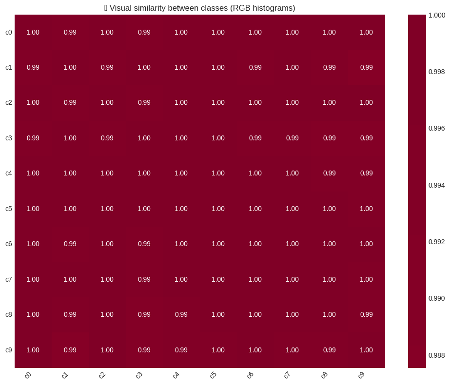
- دلیل اهمیت: محیط پسزمینه (کابین) در همه عکسها ثابت است، بنابراین مدل باید تفاوتهای ریز رفتاری را یاد بگیرد.
- کلاسهای خلطآفرین (شباهت بالای ۸۵٪):
• پیامک با دست راست (c1) ↔ تلفن با دست راست (c2)
• پیامک با دست چپ (c3) ↔ تلفن با دست چپ (c4) - راهکار: مدل باید توجه ویژهای به موقعیت دقیق دستها نسبت به گوش و فرمان داشته باشد.
۶. استراتژی حیاتی ضد-نشت (Anti-Leakage)
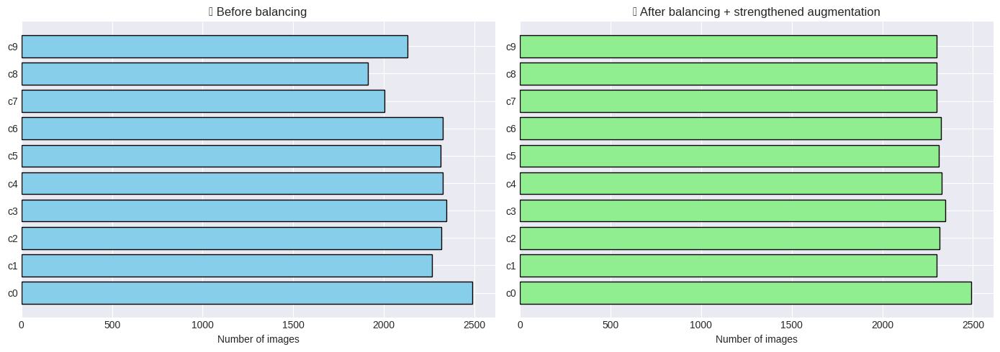
- معضل نشت داده: مجموعه داده شامل ۲۶ راننده (Subject) است. استفاده از تقسیم تصادفی (Random Split) باعث میشود شبکه به جای یادگیری «حواسپرتی»، چهره و لباس راننده را حفظ کند و دقت کاذب ۹۹٪ بدهد!
- راهکار GroupShuffleSplit: تفکیک دادهها بر اساس شناسه راننده انجام شد. هیچ رانندهای به طور مشترک در مجموعههای آموزش و اعتبارسنجی حضور ندارد.
- متوازنسازی هوشمند: جبران کمبود تصاویر در برخی کلاسها تا سقف ۲۳۰۰ عکس به کمک افزونهسازی (Augmentation).
۷. راستیآزمایی عدم تکرار (Duplicate Detection)
- الگوریتم MD5: برای بررسی کپیهای دقیق پیکسلی استفاده شد و اطمینان کامل حاصل گردید که هیچ فایلِ کاملاً یکسانی بین مجموعههای Train و Test وجود ندارد.
- الگوریتم pHash (هش ادراکی): تصاویری که از نظر بصری بسیار شبیه به هم بودند (مانند فریمهای متوالی و پشت سر همِ یک ویدیو) با فاصله هامینگ بسیار کم شناسایی شدند.
- نتیجهگیری: خروجی این الگوریتمها ثابت کرد که استراتژیِ جداسازیِ اصولی بر اساس شناسه راننده (GroupShuffleSplit)، کاملاً مانع از کالیبراسیونِ غلطِ مدل روی فریمهای همزاد شده است.
💡 نکته فنی: خروجی این بخش به صورت لاگهای پردازشی در کنسول تایید شد و خروجی تصویری نداشتیم.
۸. استراتژی دادهافزایی (Data Augmentation)
⚠️ چالش چپ و راست: پارامتر Horizontal Flip حتماً باید غیرفعال (False) بماند. قرینهسازی افقی باعث تبدیل دست راست (کلاس c1) به دست چپ (کلاس c3) شده و لیبل دادهها را تخریب میکند!
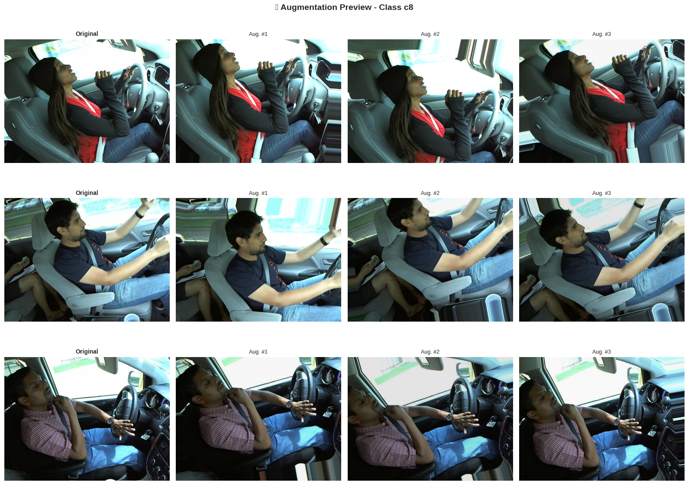
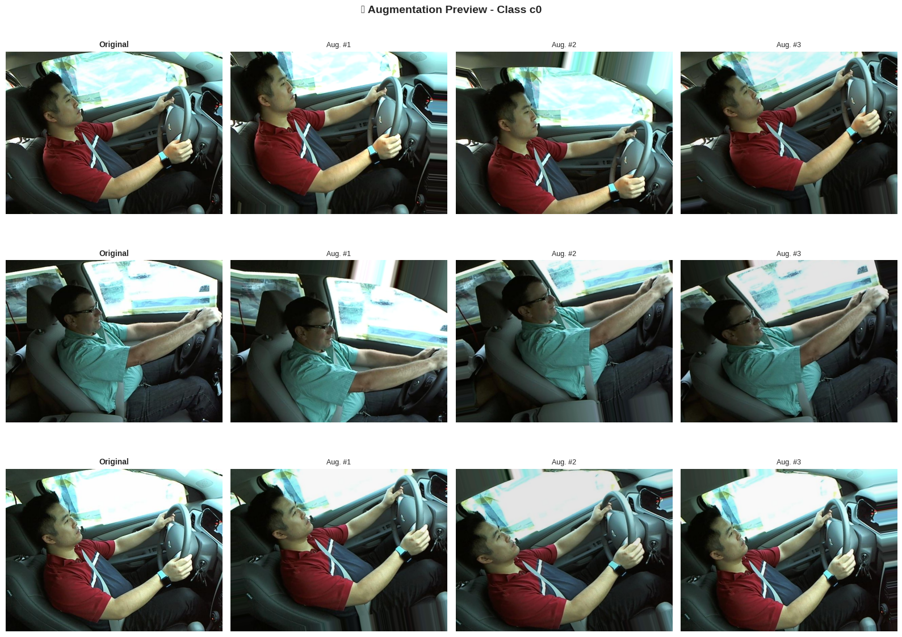
۹. معماری مدل اول: MobileNetV2 سفارشی
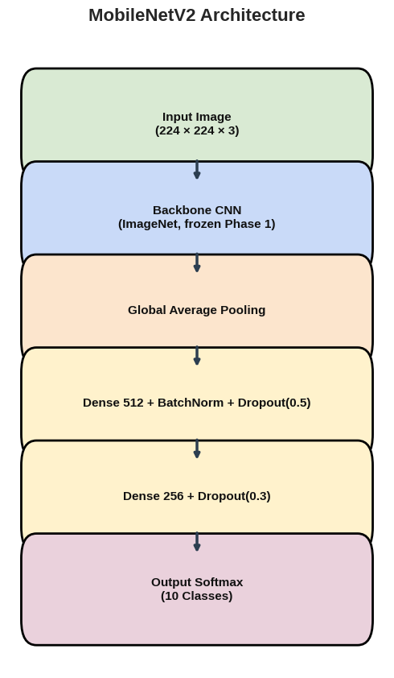
- چرا MobileNet؟ استفاده از کانولوشنهای عمقی-جداپذیر (Depthwise Separable) به جای کانولوشن استاندارد، حجم پارامترها را بهشدت کاهش داده و مناسب پردازش بلادرنگ روی برد خودرو است.
- تغییرات در Classifier Head:
1. لایه Global Average Pooling
2. لایه Dense(512) + Dropout(0.5)
3. لایه Dense(256) + Dropout(0.3)
4. لایه Softmax نهایی برای ۱۰ کلاس - منظمسازی (Regularization): استفاده از جریمه L2 (میزان 1e-4) در لایههای متراکم.
۱۰. پایپلاین و آمادهسازی نهایی دادهها
- مقیاسدهی (Rescaling): تبدیل شدت پیکسلها از بازه 0 تا 255 به بازه استاندارد 0 تا 1 در قالب Float32.
- انکودینگ: نگاشت لیبلها به صورت بردارهای One-Hot برای محاسبه بهینه خطای آنتروپی متقاطع.
- اندازه دسته (Batch Size): تنظیم روی ۱۲۸ جهت استفاده حداکثری از توان موازیسازی پردازندههای گرافیکی (GPU).
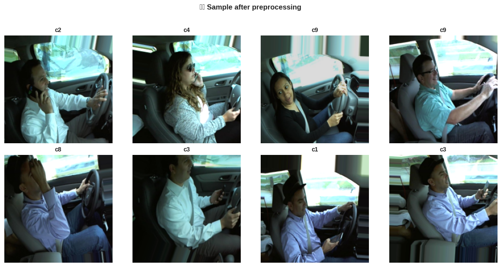
جمعبندی بخش پیشپردازش
| چالش / موضوع | راهکار پیادهسازی شده در کد |
|---|---|
| نشت داده میان رانندگان | استفاده از GroupShuffleSplit برای جداسازی کامل ۲۶ راننده. |
| شباهت کلاس چپ و راست | لغو کامل قرینهسازی افقی (Horizontal_Flip = False). |
| نامتوازن بودن کلاسها | دادهافزایی هوشمند هدفمند (تارگت: ۲۳۰۰ عکس در هر کلاس). |
| محدودیت سختافزار خودرو | استفاده از معماری سبکوزن MobileNetV2. |
مرحله بعدی: شروع فاز آموزش دو مرحلهای (استخراج ویژگی + Fine-Tuning) روی شبکهها و استخراج نتایج.
نگاهی اجمالی به عملکرد کلی MobileNetV2
- پیشنمایش نتایج: پیش از ورود به بررسی دقیقِ فازهای آموزش، در این داشبورد نمایی کلی از خروجی نهایی مدل را در طول هر ۲۳ ایپاک مشاهده میکنید.
- دقت نهایی: مدل موفق شده با وجود سبک بودن، به دقت بسیار مطلوب ۹۴.۴۲٪ روی دادههای اعتبارسنجی دست یابد.
- پایداری آموزش: نمودارها نشاندهنده عدم وجود بیشبرازش (Overfitting) مخرب و اثربخشیِ استراتژیِ تنظیم نرخ یادگیری (نمودار سبز رنگ) هستند.
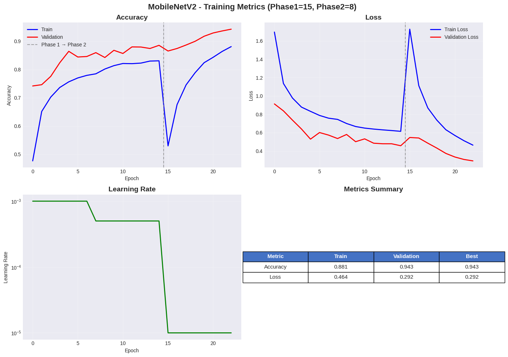
۱۱. آموزش MobileNetV2 (فاز اول: استخراج ویژگی)
- استراتژی آموزش: در فاز اول (۱۵ ایپاک)، پایههای مدل (Backbone) که روی ImageNet آموزش دیده بودند، کاملاً فریز (Frozen) شدند تا وزنهایشان تخریب نشود.
- نرخ یادگیری (Learning Rate): شروع با 1e-3 (0.001) و استفاده از الگوریتم بهینهساز Adam.
- عملکرد: مدل با سرعت خوبی همگرا شد و به دقت اعتبارسنجی ۸۹.۷۶٪ و دقت Top-3 برابر با ۹۸.۰۴٪ رسید.
- نتیجه: لایههای طبقهبند (Classifier Head) کاملاً با شکل کلی دادههای حواسپرتی آشنا شدند.
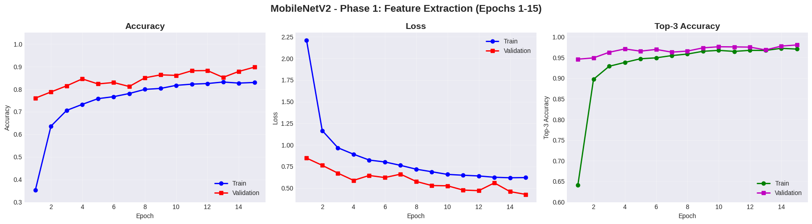
۱۲. آموزش MobileNetV2 (فاز دوم: تنظیم دقیق / Fine-Tuning)
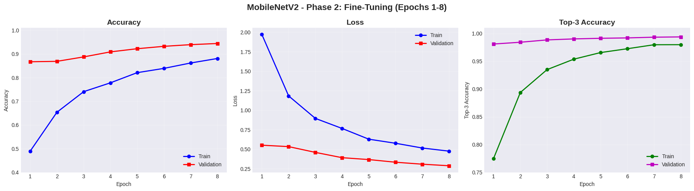
- آزادسازی لایهها: لایههای پایانی شبکه اصلی (از لایه ۱۰۰ به بعد) Unfreeze شدند تا ویژگیهای اختصاصی کابین خودرو را یاد بگیرند.
- کاهش شدید نرخ یادگیری: برای جلوگیری از پدیده فراموشی فاجعهبار (Catastrophic Forgetting)، نرخ یادگیری به 1e-5 کاهش یافت.
- جهش عملکرد: دقت اعتبارسنجی (Validation) به ۹۴.۴۲٪ ارتقا یافت و خطای اعتبارسنجی تا حد 0.28 پایین آمد.
۱۳. تکامل کلی آموزش و زمانبندی نرخ یادگیری
- نمای کلی (Complete Evolution): اتصال نمودارهای فاز ۱ و ۲ نشانگر تاثیر شگرف Fine-Tuning در ایپاک ۱۶ است (جهش نمودار).
- کالبکها (Callbacks):
• ReduceLROnPlateau: با گیر کردن مدل در فلات، نرخ یادگیری نصف شد (سقوط پلهای در نمودار سبز).
• EarlyStopping: برای جلوگیری از Overfitting.
• ModelCheckpoint: ذخیره خودکار بهترین وزنها.
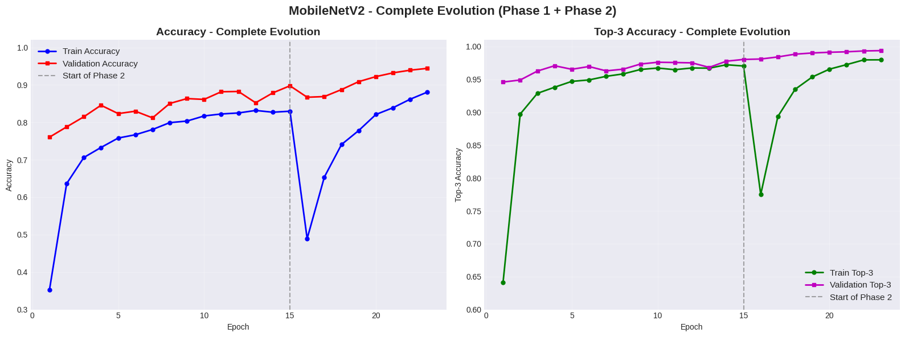
۱۴. ارزیابی نهایی MobileNetV2 (ماتریس درهمریختگی)
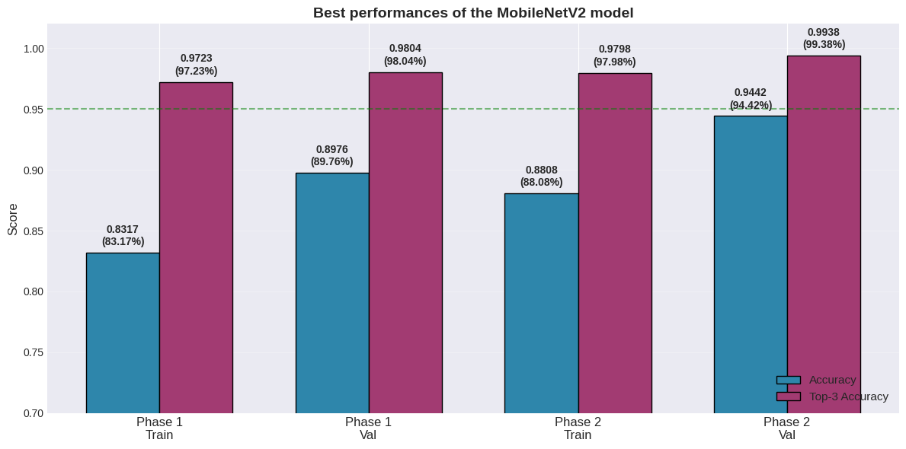
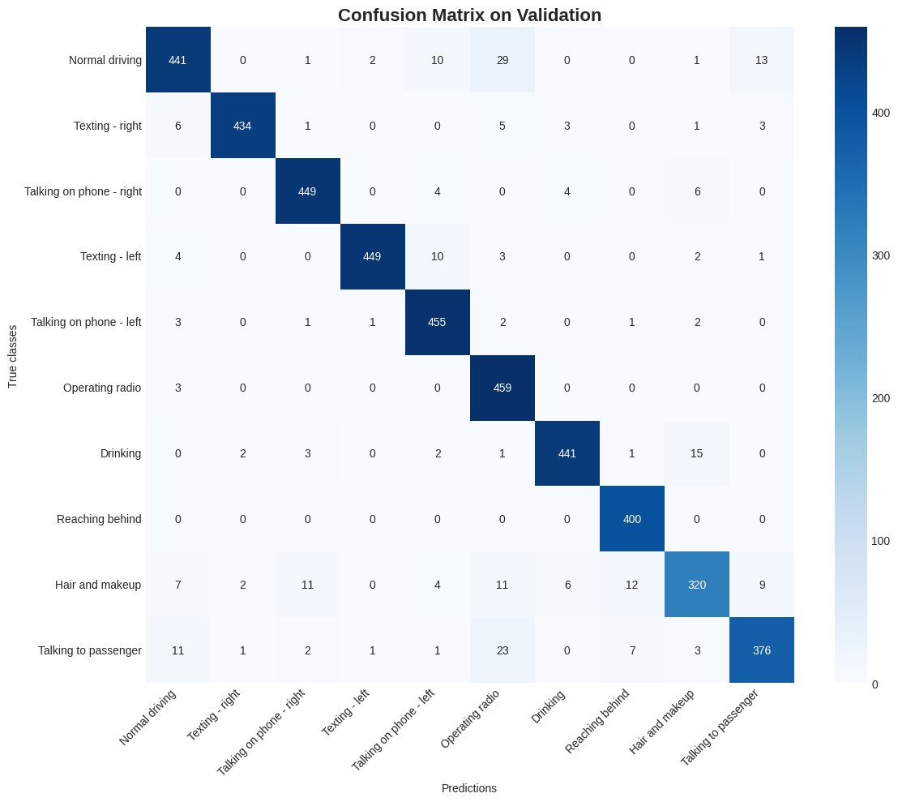
۱۵. منحنی ROC و تست عملی MobileNetV2
- منحنی ROC (One-vs-Rest): سطح زیر نمودار (Macro AUC) برای مدل MobileNetV2 بسیار نزدیک به 1.00 است که نشاندهنده قدرت بالای تمایز بین ۱۰ کلاس است.
- پیشبینی روی دادههای Test: مدل روی تصاویری که هرگز در طول آموزش ندیده بود، با سطح اطمینان (Confidence) بالای ۹۰٪ به درستی کلاسها را پیشبینی کرد.
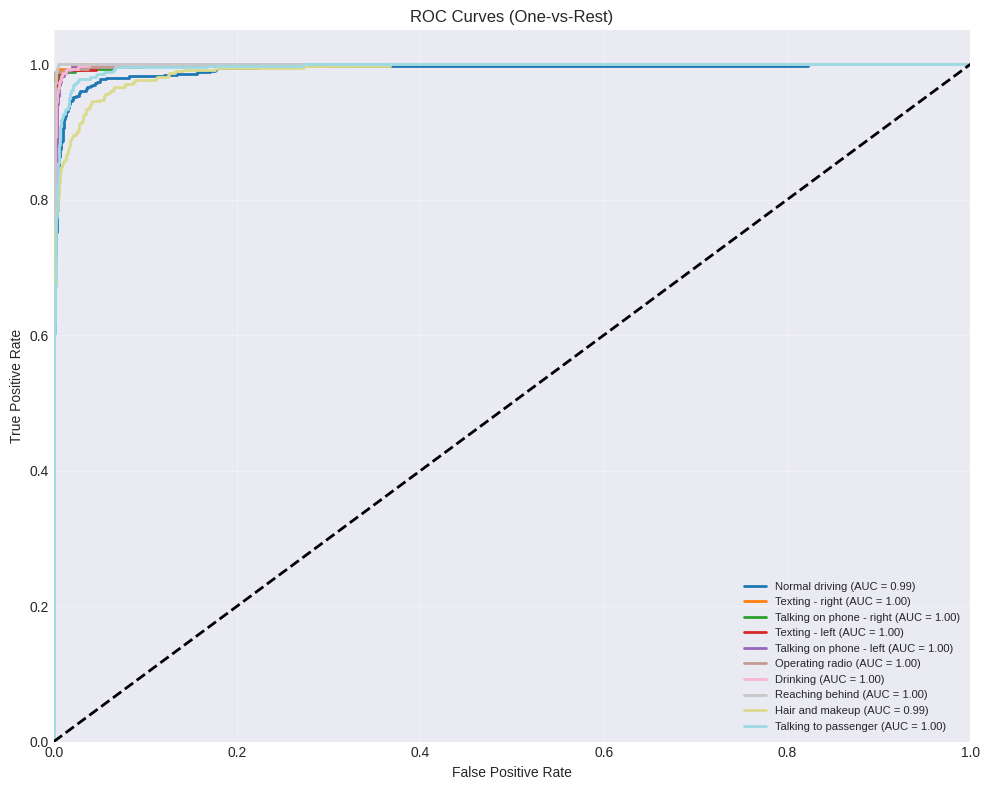
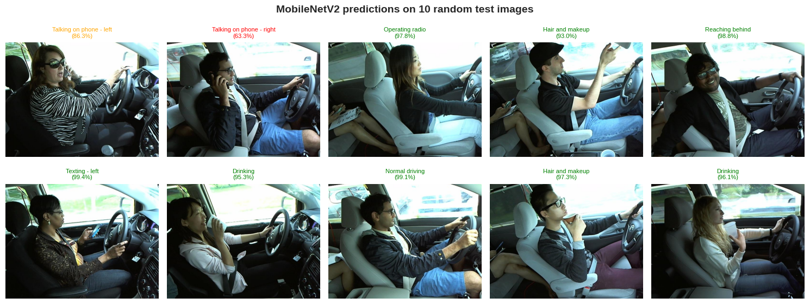
۱۶. ارتقای رویکرد: معرفی معماری ResNet50
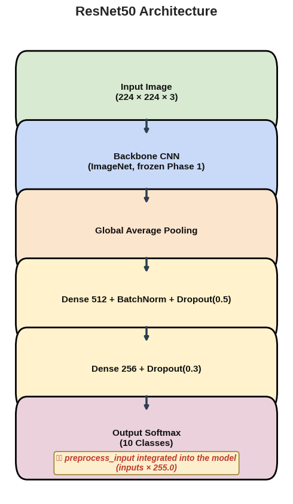
- چرا شبکه ResNet50؟ برای دستیابی به دقتهای بالاتر، از شبکه بسیار عمیقتر ResNet50 استفاده کردیم. این شبکه با استفاده از اتصالات میانبر (Residual Connections) مشکل محوشدگی گرادیان (Vanishing Gradient) را حل میکند.
- تغییر پیشپردازش: برخلاف MobileNet، ورودی شبکه ResNet50 نیاز به تابع `preprocess_input` مخصوص خود دارد (پیکسلها ضرب در 255.0 میشوند).
- تنظیمات یکسان: اندازه بچ (128)، توابع منظمسازی L2 و دراپاوت (Dropout) دقیقاً مشابه مدل قبلی تنظیم شدند تا مقایسه عادلانه باشد.
۱۷. آموزش ResNet50 (فاز اول: استخراج ویژگی)
- قدرت شبکههای بسیار عمیق: تنها در همان فاز اول (فریز بودن پایهها) طی ۱۵ ایپاک، مدل با سرعت خیرهکنندهای همگرا شد.
- شکستن مرزها: دقت اعتبارسنجی (Validation Accuracy) در همان فاز اول به ۹۹.۵۲٪ رسید!
- دقت Top-3: عملاً به ۱۰۰٪ (۹۹.۹۸٪) میل کرد که نشان از ظرفیت بسیار بالای ResNet50 برای درک الگوهای پیچیده و بافت کابین خودرو دارد.
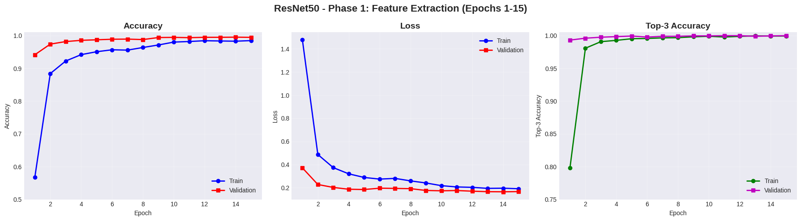
۱۸. آموزش ResNet50 (فاز دوم: تنظیم دقیق / Fine-Tuning)
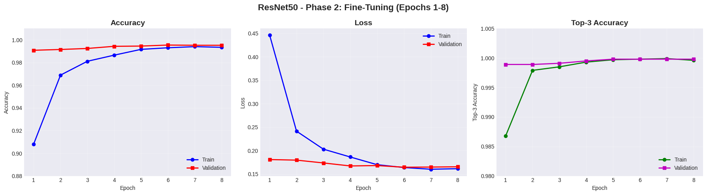
- استراتژی آزادسازی: لایههای شبکه از بلوک ۱۰۰ به بعد آزاد شدند تا شبکه بتواند الگوهای پیچیدهتر (مانند تفاوت گوشی و دست خالی) را کاملاً درونیسازی کند.
- دقت خیرهکننده: در پایان این فاز، دقت اعتبارسنجی (Validation Accuracy) به عدد بینظیر ۹۹.۵۸٪ رسید!
- دقت Top-3: برابر با ۹۹.۹۸٪ ثبت شد که نشان میدهد مدل تقریباً در ۱۰۰٪ مواقع، کلاس صحیح را در بین ۳ حدس اول خود قرار داده است.
تکمیل تحلیل MobileNetV2 و ورود به قلمرو ResNet50
تا به اینجا دیدیم که مدل سبکوزن ما (MobileNetV2) دقت بسیار خوب ~۹۴.۵٪ را ثبت کرد.
همچنین مدل سنگینوزن (ResNet50) در همان قدمهای اول نوید دقتهای بالای ۹۹٪ را داد.
در بخش پایانی، به سراغ نتایج نهایی ResNet50 و مقایسه هیجانانگیز این دو شبکه میرویم...
۱۹. تکامل آموزش و عملکرد کلی (ResNet50)
- پایداری آموزش: برخلاف شبکههای کمعمق، نمودار خطای اعتبارسنجی (Validation Loss) در ResNet50 هیچ نوسان شدیدی ندارد و روی عدد 0.16 کاملاً پایدار شده است.
- مقایسه دو فاز: جهش دقت از فاز اول به دوم محسوس است، اما به دلیل قدرت بالای پایههای ResNet، حتی فاز اول نیز دقت بالای ۹۸٪ را ثبت کرده بود.
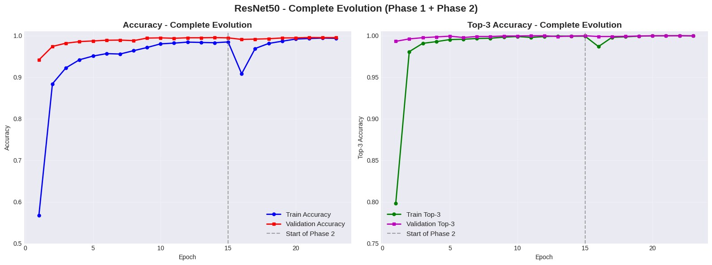
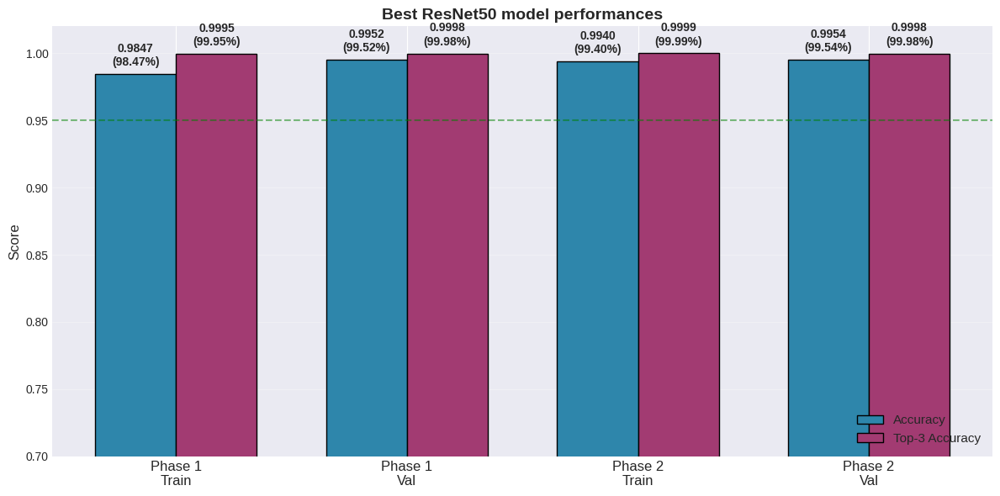
۲۰. ارزیابی نهایی و ماتریس درهمریختگی (ResNet50)
- قطر اصلی ماتریس: تمرکز مطلق روی قطر اصلی نشان میدهد که خطاهای طبقهبندی (Misclassifications) به شکل چشمگیری در این مدل کاهش یافتهاند.
- منحنی ROC و AUC: در تمامی ۱۰ کلاس، سطح زیر نمودار (AUC) تقریباً برابر با 1.000 است که نشان از قابلیت تفکیکپذیری کامل مدل دارد.
💡 نکته دفاع: با مقایسه این ماتریس با مدل قبلی، متوجه میشویم که ResNet50 چالش کلاسهای «تلفن راست» و «پیامک راست» را کاملاً حل کرده است.
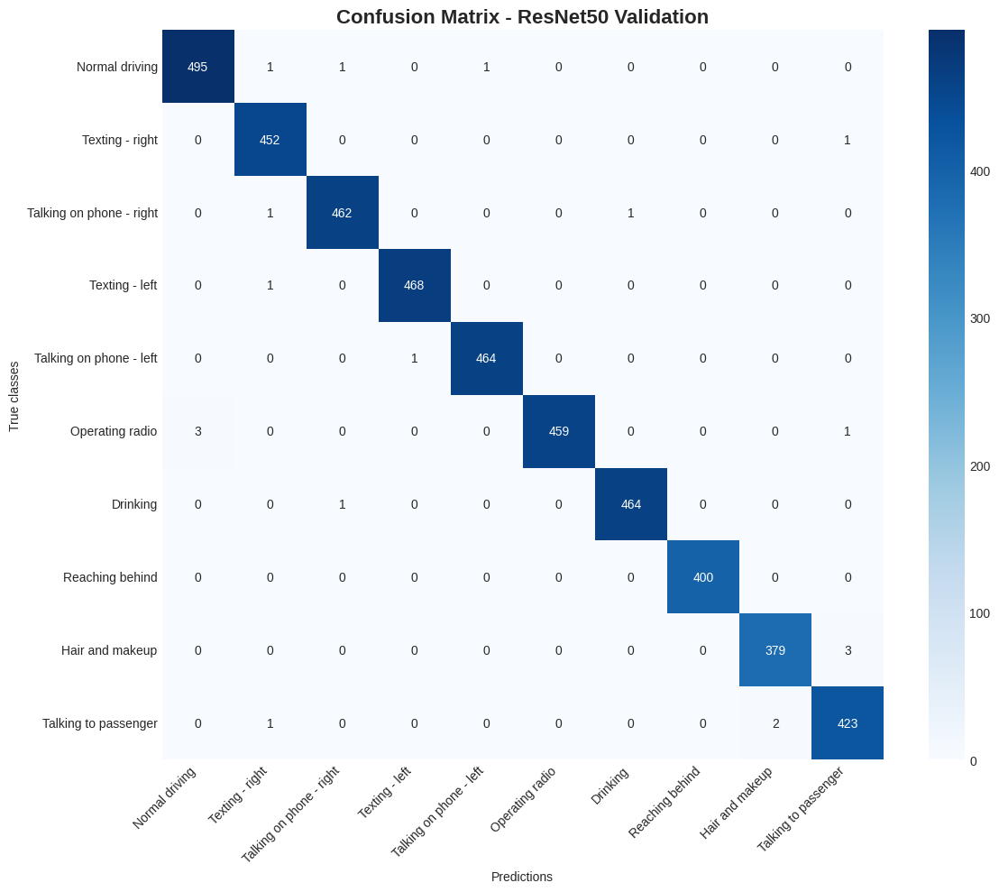
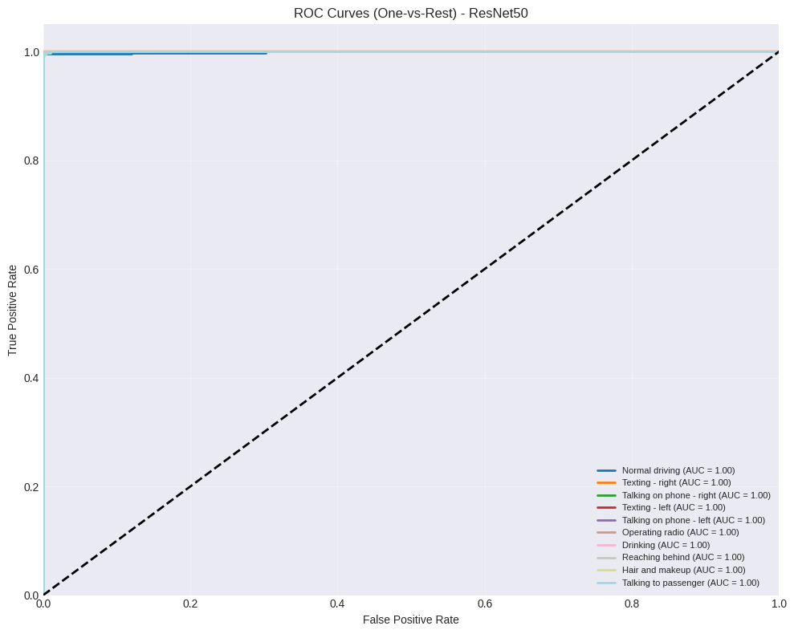
۲۱. تست عملی و استنتاج مدل (ResNet50)
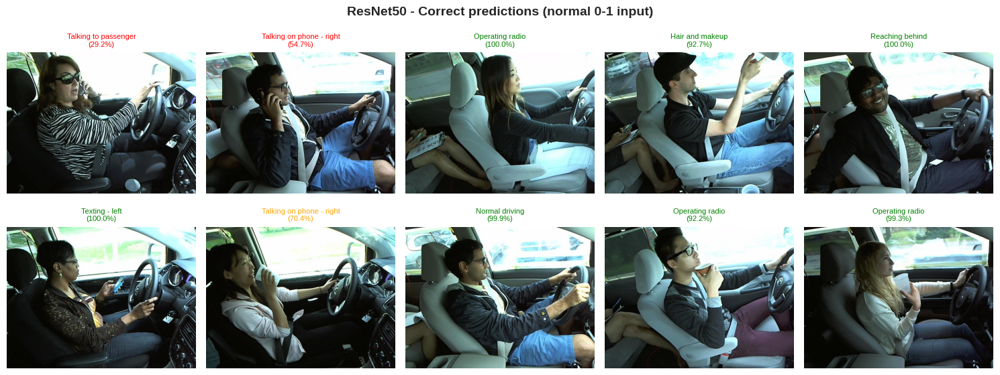
- پیشبینی تصاویر جدید: مدل روی مجموعه تصادفی از تصاویر Test (که لیبل آنها مخفی بوده) ارزیابی شد.
- اطمینان شبکه (Confidence): برخلاف مدلهای ضعیف که با درصد اطمینان شکننده پیشبینی میکنند، ResNet50 در اکثریت قریب به اتفاق موارد با اطمینان بالای ۹۹٪ رفتار راننده را طبقهبندی کرده است.
- پیشپردازش متفاوت: در زمان استنتاج، ورودیها دقیقاً مشابه پایپلاین آموزش با تابع مخصوص
resnet_preprocessمقیاسدهی شدهاند.
۲۲. مقایسه جامع: MobileNetV2 در برابر ResNet50
- سرعت همگرایی: همانطور که در نمودار پیداست، ResNet50 از همون ایپاکهای ابتدایی با اختلاف زیادی بالاتر از MobileNet قرار گرفته است.
- دقت نهایی:
• ResNet50: ~۹۹.۵٪
• MobileNetV2: ~۹۴.۴٪ - نتیجه تحلیلی: عمق شبکه و استفاده از بلوکهای پسماند (Residual) در ResNet50 باعث استخراج ویژگیهای بسیار غنیتری از بافت و پیکسلهای تصویر شده است.
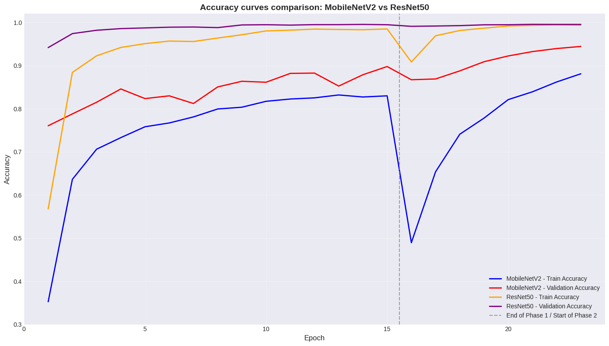
۲۳. ارزیابی خروجیهای همزمان و تحلیل معماری
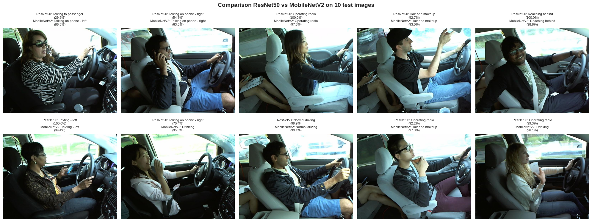
- مصالحه دقت و سرعت (Trade-off):
۱. MobileNetV2: با پارامترهای بسیار کمتر، فوقالعاده سریع است و برای تعبیه مستقیم روی پردازندههای ضعیفِ داخل خودرو ایدهآل است.
۲. ResNet50: دقت خیرهکنندهای دارد اما نیازمند توان پردازشی بیشتری است (مناسب برای پردازش ابری یا Edge قدرتمند).
با سپاس از توجه شما
پایان ارائه
آماده پاسخگویی به پرسشهای شما هستیم.